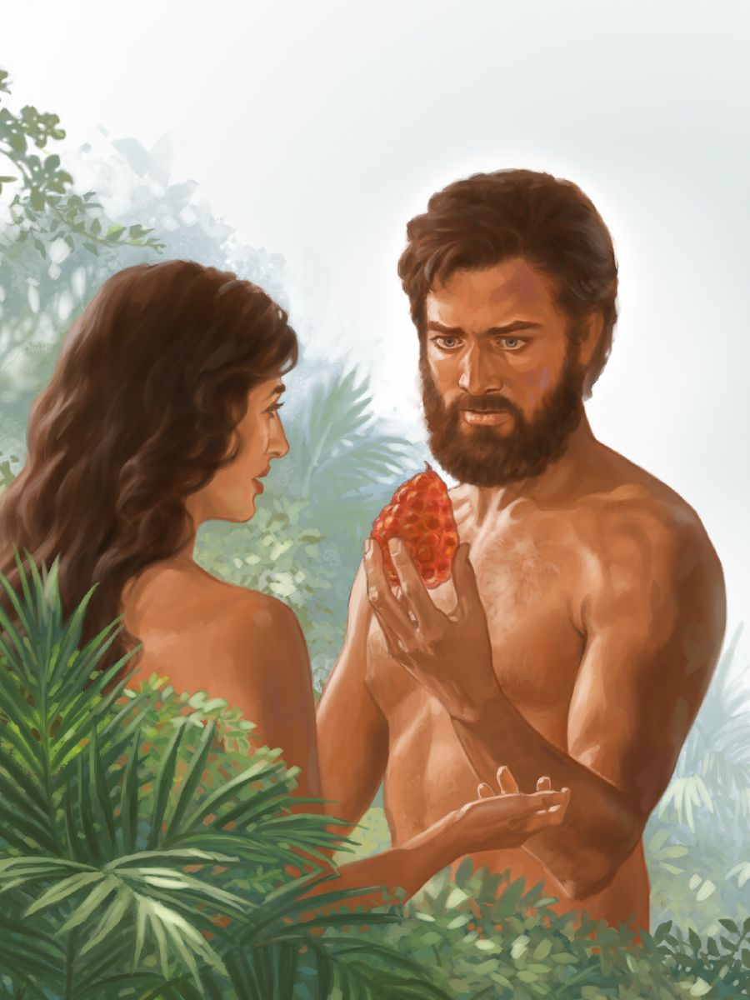

| Dios |
Creo el universo y todo lo que hay en él, posteriormente creo al hombre, lo bendijo y le dio una
mision, adicionalmente le prohibio comer del árbol del
bien y del mal, pero este lo desobedeció, trayendo la maldición sobre su vida y sobre la tierra
anteriormente creada |
 |
| Adan y Eva |
Adán y Eva fueron el primer hombre y la primera mujer que poblaron la Tierra. Dios les había
permitido comer de todo árbol del jardín del Edén, excepto del árbol del bien y del mal, pero ellos
desobedecieron y fueron expulsados a causa de su pecado |
 |
| Serpiente |
Engaño a la mujer para que comiera del fruto del árbol del bien y el mal. A causa de este engaño,
Dios la castigo y la maldijo entre todos los animales. |
|